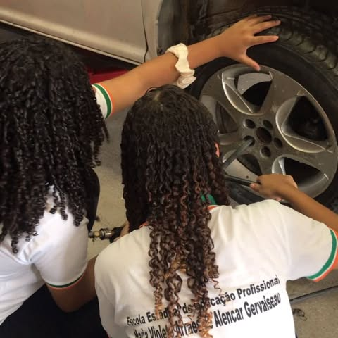
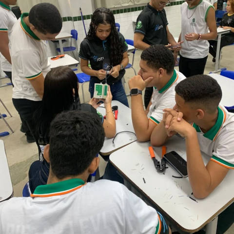

Cursos do Violeta
A Escola Estadual de Educação Profissional Maria Violeta Arraes de Alencar Gervaiseau possui 4 Cursos Técnicos atualmente: Estética, Manuntenção Automotiva, Áudio e Vídeo e Redes de Computadores. Todos fruto de mais uma ação da Secretaria de Educação do Estado do Ceará. A escola está localizada em Crato, capital da cultura cearense e morada de grandes personalidades brasileiras.
Estética
O curso de Estética oferece uma formação completa para quem deseja ingressar no universo da beleza e cuidados com a pele. Sendo cuidadosamente elaborada para proporcionar aos alunos um aprendizado teórico e prático de técnicas essenciais e avançadas, com foco na saúde e bem-estar dos clientes.
Durante o curso, os alunos irão desenvolver habilidades em procedimentos estéticos faciais e corporais, como limpeza de pele, massagens, depilação, aplicação de produtos cosméticos, maquiagem e técnicas de rejuvenescimento. Além disso, o curso abrange conteúdos importantes de anatomia, fisiologia da pele, biosegurança, ética profissional e gestão de negócios na área da estética.
Ao final da formação, os alunos estarão prontos para atuar com excelência no mercado de trabalho, em locais como:
- Clínicas estéticas
- Clínicas médicas
- Hotéis
- Academias
- Spas
- Domicílios
- Salões de Beleza
Manuntenção Automotiva
O Curso Técnico em Manutenção Automotiva é constituída de elementos essenciais para capacitação do profissional, tendo como referência a estruturação do setor produtivo e os indicadores de tendências do mercado.
O Curso Técnico em Manutenção Automotiva permite a prática curricular ao aluno por meio do estágio supervisionado em empresas. Essa ponte entre a sociedade e a escola proporciona a transformação do conhecimento teórico em um instrumento de aplicação na vida profissional.
As disciplinas orientam o aluno mediante a formação básica para:
- manutenção de motores e sistemas automotivos
- execução de testes de campo
- campos de prova de veículos
- manutenção e reparos mecânicos
- eletroeletrônicos
Áudio e Vídeo
No curso de áudio e vídeo treinamento abrangente e atualizado é oferecido para aqueles interessados em ingressar na área de produção e edição de conteúdo de áudio. O curso é cuidadosamente elaborado para proporcionar aos alunos aprendizado teórico e prático, com foco em habilidades críticas e avançadas, a fim de prepará-los para atuar em diversos setores de áudio. Os alunos aprenderão a manusear equipamentos profissionais de áudio e vídeo, capturar e editar imagens e som, além de desenvolver projetos de produção.
Ao final do curso, os alunos serão capazes de ingressar no mercado de trabalho nas seguintes áreas:
- Vídeo e animação
- Empresas de comunicação
- Lazer e cultura
- Produtoras de multimídia
- Editoras de jornais
- Revistas on-line
- Cinema digital
Redes de Computadores
Pesquisas apontam que as profissões de TI mais promissoras da atualidade estão relacionadas com o desenvolvimento de softwares e aplicativos para dispositivos móveis, com a segurança e a infraestrutura de redes e com os projetos em User Experience (U.E). Todas elas necessitam de um profissional da área de redes conectando a infraestrutura e disponibilizando os softwares desenvolvidos.
O técnico em redes de computadores têm um perfil profissional focado na implementação e manutenção de infraestrutura de rede, incluindo dispositivos de acesso, sistemas operacionais e serviços de rede. Esses profissionais são responsáveis por implementar padrões de segurança cibernética e adotar padrões técnicos que atendam aos requisitos de qualidade, saúde, segurança no local de trabalho e proteção ambiental. Seu trabalho abrange todas as partes físicas e lógicas de uma rede de computadores para garantir continuidade operacional, eficiência e segurança. Os técnicos em redes de computadores, atuam em empresas públicas e privadas, bem como em organizações do terceiro setor, desempenham papel fundamental no planejamento, implementação e gerenciamento de projetos relacionados à infraestrutura de redes, sempre buscando a proteção dos dados e a integridade da rede.
Ao final do curso, os alunos estarão capacitados para ingressar em diversas áreas do mercado de trabalho, como:
- Administração de redes de computadores
- Comunicação de dados
- Suporte técnico de redes
- Gerenciamento de segurança da informação
- Segurança cibernética
- Implantação e manutenção de infraestruturas de redes
- Serviços em nuvem